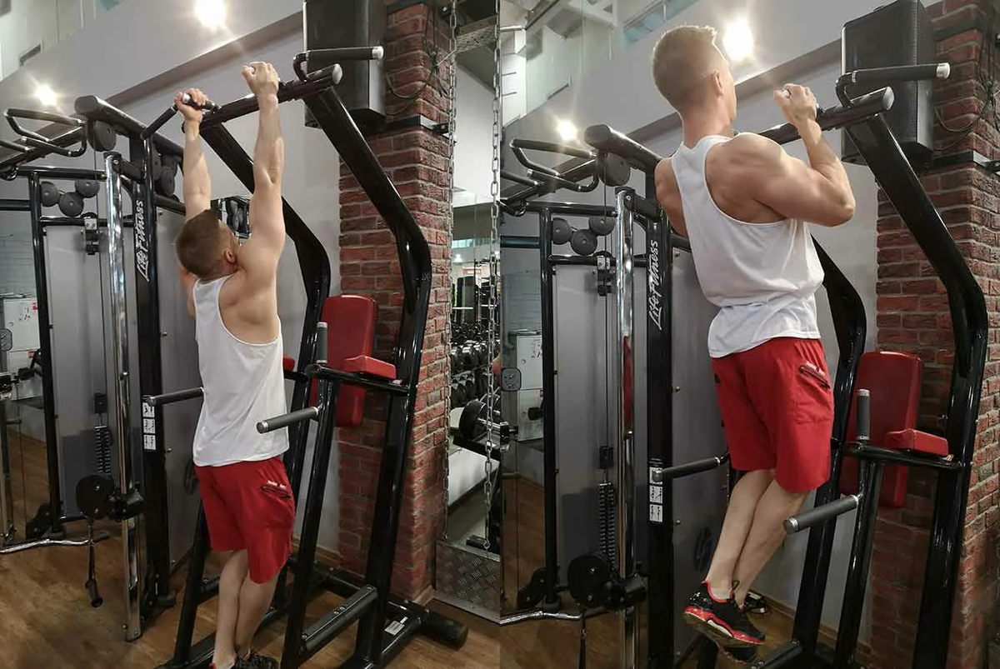

Treniņu programma muguras un bicepsa attistīšanai
Lejupielādēt treniņu programmas bildi
Ievads
Treniņu programma ietver vingrinājumus ķermeņa muguras un bicepsa muskuļu nostiprināšanai
Iesildīšana
Sāciet ar dinamisku stiepšanos, lai sagatavotu muskuļus.
Galvena treniņu programma
Treniņu laikā starp vingrinājumiem janodrošina pārtraukumus. Atkarībā no jūsu fiziskas sagatavotības līmeņa tie var ilgt no 2 līdz 4 minūtēm. Pārtraukumu ilgumu jāizvēlas tā, lai visus vingrinājumus varētu izpildīt labā kvalitātē.
- Pievilkšanās ar plašu satvērienu - 3 piegājieni ar 6-8 atkartojumiem
- Paralēlas satvēriena pievilkšanās - 3 piegajieni ar 10-12 atkartojumiem
- Pievilkšanās ar reverso saķeri - 3 piegajieni ar 10-12 atkartojumiem
Pievilkšanās ar plašu satvērienu

Paralēlas satvēriena pievilkšanās
Pievilkšanās ar reverso saķeri

Atvēsināšanas vingrinājumi
Nosledzot treniņu varat veikt atvēsinošos vingrinājumus, lai atbrīvot ķermeņi no pārāk lielas slodzes. Atvesināšanas vingrinājumi veicina asinsrīti un samazina sirds un citu muskuļu pārslodzi. Turklāt jūs pazemināsiet savu sirdsdarbības ātrumu, ķermeņa temperatūru un asinsspiedienu līdz normālam līmenim.